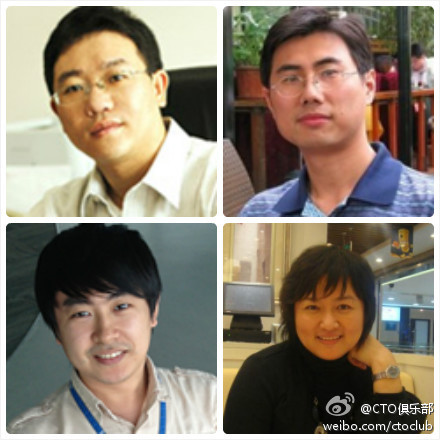

//@CTO俱乐部:CSDN深圳技术社区 //@ShiningXYY:把我和三位型男技术领导者放在一起：第一个带100多人的团队，第二位带500多人的团队，第三位也是带100多人…汗颜…偶还是单身…@CTO俱乐部:#CTO俱乐部#本周六深圳研发团队管理经验分享欢迎报名，3位在技术管理有所感悟的嘉宾将分享他们一路走来的经验和教训。广州中科院软件所常务副所长@袁-峰，深圳明源技术总监@阿朱，腾讯高级项目经理陈军@elginchen。主持人@ShiningXYY，@Ada李力 @孟迎霞 @CSDN付江 @CSDN研发频道 网页链接 